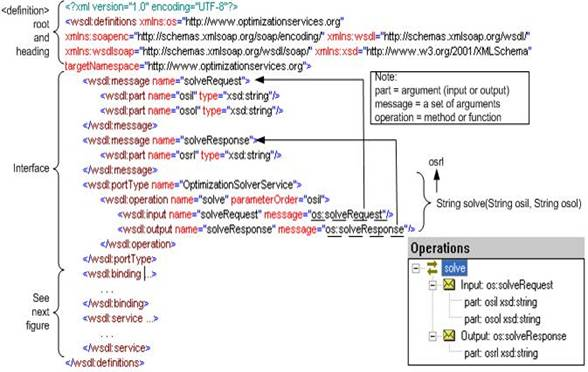
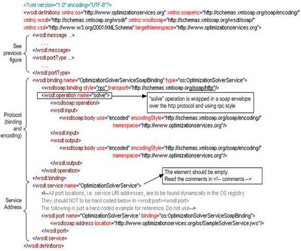

|
Optimization Services hookup Language (OShL)
Click to see or download the OShL WSDL -> OShL.wsdl [stable]
click here to see a description on OShL.
OShL (hook) is a Web Service Definition Language for invoking solver/analyzer services.
Communication is always between two components; therefore both the agent and the service have to follow certain rules. The rules are specified in the OShL.wsdl document. The following figure shows the first half (interface part) of a simplified version of the WSDL document. This part varies between different types of services. All the solver services and analyzer services are required to follow the interface specification of OShL.


The most important part of the first above figure is the <wsdl:portType> element. The portType element can have one or more <operation> elements. In this simplified example, we only list one operation whose name is solve. Each operation corresponds to a method or function in a programming language. So there are usually two parts to an operation: the input element and the output element. The format of both elements is controlled by the message attribute. In the solve operation, we require its input to be of message type “solveRequest” and its output to be of message type “solveResponse.” The solveRequest message has two part elements, osil and osol, both of string types. A part corresponds to an argument of a function or method. So we can regard a message as a sequence of arguments to be passed to the function or method.
Simply put, the WSDL document in the above figure specifies the following operation for each solver:
String solve(String osil, String osol);
that is, every solver service is required to have a method called “solve” that takes two input strings and returns one string. The first input string should be an OSiL optimization instance, the second input string should be an OSoL option instance, and the returned string should be an OSrL result instance. OShL, as well as other OS communication protocols, does not specify how the strings should look inside. This is the responsibility of OS representation protocols. So without the OS representation protocols, a client can still transmit any junk strings to a solver service successfully. Of course, all the OS-compatible components are required to validate input and output instances, so no invalid instances will be ever transmitted onto the network. WSDL documents and XML schemas are two key technologies to ensure the high quality of an entire OS network. In the following table, we list the operations specified in the OShL WSDL document.
Operation |
Description |
String getJobID(String OSoL) |
get a job ID
1st input is an OSoL option.
Output string is a unique job id. |
String solve (String osil, String osol) |
solve an optimization problem (synchronous)
1st input is an OSiL instance for optimization problem.
2nd input is an OSoL option for solver options. Solver options are assumed to be default if empty ("").
Output is an OSrL instance for an optimization. |
boolean send (String osil, String osol) |
send an optimization problem (asynchronous)
1st input is an OSiL instance for optimization problem.
2nd input is an OSoL option for solver options.
Solver options are assumed to be default if empty ("").
Output is true if the inputs are sent successfully; otherwise false. |
String retrieve (String osol) |
retrieve an optimization result for an optimization problem that was sent or solved previously.
1st input is an OSoL option that should contain a jobID of the previous job.
Output is an OSrL result for the requested optimization problem. |
String kill (String osol) |
kill the job process for an optimization problem that was sent or solved previously.
1st input is an OSoL option that should contain a jobID of the previous job.
Output is an OSrL result that indicates whether the kill process is successful or not. |
String knock (String OSpL, String osol) |
knock at the optimization service to get or set process information related with the service or jobs on that service.
1st input is an OSpL process input that indicates the request action and other related information.
2nd input is an OSoL option for knock options.
Output is an OSpL process result that contains response status and/or requested process information. |
The second above figure shows the other half (protocol & address part) of the OShL WSDL document. The hard-coded service address part should be empty and is only shown for the purpose of a complete illustration. The generic OShL WSDL document does not specify where the service is. In reality, the service location is dynamically discovered in the OS registry. Each individual solver or analyzer service has exactly the same OShL WSDL document following the OShL protocol except that it has an extra location specified in the <wsdlsoap:address> element under <wsdl:service>. In the second above figure, this is illustrated with an example address as:
http://www.optimizationservices.org/os/SampleSolverService.jws.
The most important part of the second above figure is the protocol part represented by the <wsd:binding> element. The protocol part of any other OSxL WSDL document is exactly the same as the OShL WSDL document here. Currently we require all the services on an OS network use exactly the same communication binding and message encoding mechanisms. So in this thesis this is the only section that we illustrate the protocol part of all OSxL WSDL documents.
The binding element contains one or more operation elements for each operation specified in the first above figure. Each operation can potentially be called using a different protocol binding. All the operations in Optimization Services, however, use the same protocol binding. In this simplified example, we only have the String solve(String, String)operation. As for any other operation, the solve operation is required to be of rpc style (remote procedure call), which is the most typical request and response calling style, or a blocking call. So the request client that invokes the solve operation from a solver service has to wait for the response. Of course, the client application can launch a separate process or thread to issue this solve operation and let the thread wait there for the response, so that the user of the application can go on with other tasks. Depending on the application settings, the solve operation and its argument instances can either be directly sent to the solver service or first submitted to a queue server. On the solver service side, when the solve operation is received, it can either solve it directly, or launch a separate process or thread to solve the instances, or it can put the instances in its own queue. Thus the request and response rpc style specified in all the OSxL WSDL documents is general enough for all the current needs, while developers can have their own innovative implementations that fit their users the best.
As for any other operation, the solve operation and its arguments are required to be packaged in a SOAP envelope which is transported over the HTTP protocol. This is specified by the transport=http://schemas.xmlsoap.org/soap/http attribute of the <wsdl:binding> element. Like the “RPC” style, the “SOAP over HTTP” transport binding is general enough for all the current needs. As Optimization Services evolves, more transport binding (SOAP over other protocols) may be added.
Each <operation> element has a <wsdl:input> element and a <wsdl:output> element in which we specify the encoding styles. In Optimization Services, we use leverage on the standard soap encoding: “http://schemas.xmlsoap.org/soap/encoding.” This makes the input and output arguments platform and programming language independent.
The protocol part of an OSxL WSDL document is technically complex to implement. These are all taken care of by the libraries provided. On the modeler (client) side, the agent hides all the networking details, such as encoding the operation arguments, packing the operations in a SOAP envelope, transmitting the SOAP envelope over the HTTP protocol and handling the HTTP response. On the service (server) side, the OS Server that hosts the service takes care of reading the HTTP request, extracting the SOAP envelope, decoding the operation arguments invoking the service interface, and sending back the result. So as long as the service interface follows the OS communication standards (e.g. the first above figure), the entire call should be completed successfully.
The OShL communication process
At the client side
We assume the user formulates an optimization problem in a modeling language system and invokes a "solve" command.
1. conversion (model -> OSiL, option -> OSoL)
Underneath, the modeling system first translates the model and option into an OSiL instance and OSoL option respectively.
2. communication
The modeling system instantiates a communication agent, for example:
OSSolverAgent osSolverAgent = new OSSolverAgent();
Suppose we already found the solver address and the address is stored in a String variable:
sSolverAddress (=http://www.ziena.com/os/KnitroSolverService.jws)
The modeling system then tells the address to osSolverAgent and delegates osSolverAgent to send and solve the problem, for example:
osSolverAgent.solverAddress = sSolverAddress;
String osrl_string = osSolverAgent.solve(osil_string, osol_string);
In the solve operation, the agent contacts the solver service at the given solverAddress and gets back an OSrL result instance stored in the String variable.
3. conversion (OSrL -> result)
On receiving the OSrL result string, the modeling system parses the result and presents it to its user. Notice that on the client side, we do not worry what language the solver service is implemented in and what platform the solver service is installed on.
On the network
When sending the OSiL and OSoL (2nd step above), the modeling system itself does not need to know how the solve operation is implemented; the OSSolverAgent class from the OS library hides all the networking complexities from the modeling language environment. In OSSolverAgent’s solve operation, four steps are taken:
1. encoding
OSSolverAgent encodes the OSiL and OSoL input strings according to the Web Services SOAP encoding style; for example all the “<” and “>” signs are repectively encoded as “<” and “>”.
2. constructing SOAP envelope
According to the OShL WSDL document, we use the “SOAP over “HTTP” transport, so OSSolverAgent packs the operation "String solve(String osil, String osol)" and the above encoded OSiL input string argument into a SOAP envelope, which looks something like this:
<soapenv:Envelope xmlns:soapenv="http://schemas.xmlsoap.org/soap/envelope/" xmlns:xsd="http://www.w3.org/2001/XMLSchema"
xmlns:xsi="http://www.w3.org/2001/XMLSchema-instance">
<soapenv:Body>
<ns1:solve soapenv:encodingStyle="http://schemas.xmlsoap.org/soap/encoding/"
xmlns:ns1="http://www.optimizationservices.org/os/ossolver/KnitroSolverService.jws">
lt;osil xmlns="os.optimizationservices.org" xmlns:xsi="http://www.w3.org/2001/XMLSchema-instance"
...
</osil>
lt;osol xmlns="os.optimizationservices.org" xmlns:xsi="http://www.w3.org/2001/XMLSchema-instance"
...
</osol>
</ns1:solve>
</soapenv:Body>
</soapenv:Envelope>
3. sending and receiving
Acording to the OShL WSDL document, we should send the above constructed SOAP envelope over the HTTP networking protocol using RPC style, so OSSolverAgent constructs the following HTTP POST header. Since this is an HTTP POST, we attach the POST data – the SOAP envelope – at the end of the HTTP header with a line separation (i.e. two new line characters):
POST /os/ossolver/KnitroSolverService.jws HTTP/1.0
Content-Type: text/xml; charset=utf-8
Accept: application/soap+xml, application/dime, multipart/related, text/*
User-Agent: Axis/1.2beta3
Host: http://www.ziena.com
Cache-Control: no-cache
Pragma: no-cache
Content-Length: 2488
<soapenv:Envelope …>
…
…
</soapenv:Envelope>
The HTTP POST method is itself of RPC style and waits until it receives the result from the remote server. When the Knitro solver service sends back the result, it should be a string and the string should be of the OSrL format. The returned result is a SOAP envelope encoded under an HTTP response header:
HTTP/1.1 200 OK
Set-Cookie: JSESSIONID=A8AF406536A271018100F64CFA462FA0; Path=/os
Content-Type: text/xml;charset=utf-8
Date: Sun, 20 Mar 2005 21:28:40 GMT
Server: Apache-Coyote/1.1
Connection: close
<soapenv:Envelope xmlns:soapenv="http://schemas.xmlsoap.org/soap/envelope/" xmlns:xsd="http://www.w3.org/2001/XMLSchema"
xmlns:xsi="http://www.w3.org/2001/XMLSchema-instance">
<soapenv:Body>
<ns1:solveResponse soapenv:encodingStyle="http://schemas.xmlsoap.org/soap/encoding/"
xmlns:ns1="http://www.optimizationservices.org/os/ossolver/LindoSolverService.jws">
<solveReturn xsi:type="xsd:string">
<osrl xmlns="os.optimizationservices.org"
xmlns:xsi="http://www.w3.org/2001/XMLSchema-instance"
xsi:schemaLocation="os.optimizationservices.org
http://www.optimizationservices/schemas/OSrL.xsd">
...
...
</OSrL>
</solveReturn>
</ns1:solveResponse>
</soapenv:Body>
</soapenv:Envelope>
4. decoding
On getting the encoded result, OSSolverAgent then extracts out the SOAP envelope attached at the end of the HTTP response header and decodes the result into OSrL:
<OSrL xmlns="os.optimizationservices.org" xmlns:xsi="http://www.w3.org/2001/XMLSchema-instance" xsi:schemaLocation="os.optimizationservices.org http://www.optimizationservices/schemas/OSrL.xsd">
...
</OSrL>
At the remote solver service side
To solve the problem, the solver service also has to follow the OShL WSDL document as communication always involves two parties. The simplified solver service code looks like:
public class MySolverService {
public String solve(String osil, String osol){
//read OSiL
OSiLReader osilReader = new OSiLReader();
osilReader.readString(osil);
OSInstance osInstance = osilReader.getOSInstance();
//read OSoL
OSoLReader osolReader = new OSoLReader();
osolReader.readString(osol);
OSOption osOption = osolReader.getOSOption();
//solve
MySolver mySolver = new MySolver();
OSResult osResult = mySolver.solve(osInstance, osOption);
//write and return OSrL
OSrLWriter osrlWriter = new OSrLWriter();
String osrl = osrlWriter.writeString(osResult);
return osrl;
}//solve
public String getJobID( ){
…
return jobID;
}//getJobID
public boolean send(String osil, String osrl){
…
return true/false;
}//send
public String retrieve(String osol){
…
return osrl;
}//retrieve
public String kill(String osol){
…
return osplOutput;
}//kill
public String knock(String ospl, String osol){
…
return osplOutput;
}//knock
}//class MySolverService
As we can see, my solver service implements all the operations required in the OShL WSDL document (listed in OShL operations table). We only briefly show the implementation of the String solve(String). There are mainly 3 steps in this operation:
solver service step 1: reading
//read OSiL
OSiLReader osilReader = new OSiLReader();
osilReader.readString(osil);
OSInstance osInstance = osilReader.getOSInstance();
//read OSoL
OSoLReader osolReader = new OSoLReader();
osolReader.readString(osol);
OSOption osOption = osolReader.getOSOption();
My solver service gets the OSiL and OSoL strings and use the OSiLReader and OSoLReader classes provided in the OS library to parse the OSiL and OSoL instances into a set of in-memory data structures that are held in a standard input interfaces (OSInstance, OSOption).
solver service step 2: solving
//solve
MySolver mySolver = new MySolver();
OSResult osResult = mySolver.solve(osInstance, osOption);
My solver is instantiated. The solver takes the optimization problem input interface (OSInstance), solves the problem and outputs the result into a standard optimization output interface (OSResult).
solver service step 3: writing and returning
//write and return OSrL
OSrLWriter osrlWriter = new OSrLWriter();
String osrl = osrlWriter.writeString(osResult);
return osrl;
My solver service uses the OSrLWriter class provided in the OS library to write the OSrL instance from the in-memory result data structures held in the OSResult output interface. My solver service then simply returns the OSrL result. Of course my solver service has to make sure the OSrL instance is valid. By using the OS library to construct the OSrL instance, the result should be automatically validated.
In the above 3 steps, we see that my solver service does not need to worry about how the input OSiL instance received from the internet (using SOAP over HTTP) should be decoded. Neither does it need to worry about how to encode and send back the OSrL output instance (again using SOAP over HTTP) to the client. This is because my solver service is hosted by instance our OS Server software. The OS Server hides all the networking complexities from the solver service. For example, we can simply put the my solver service code in a file called MySolverService.jws and put the file in the os sub-directory relative to the OS Server’s public root directory. Since in our example, we host the my solver service at http://www.optimizationservices.org, thus the service address is at http://www.optimizationservice.org/os/MySolverService.jws (i.e. http://domain name + directory + service, just like a regular Web page address). What the OS Server does is more or less the opposite of what the client’s communication agent does, again in 4 steps:
solver server step 1: decoding
On getting the “SOAP over HTTP” request from the client, the OS Server extracts out the SOAP envelope attached at the end of the HTTP request header, gets the operation name and decodes the operation input into the regular OSiL and OSoL instances. This is similar to any Web server in handling a regular HTTP request with POST message (e.g. HTML form data).
solver server step 2: invoking
The OS Server loads the MySolverService.jws file and compiles the class only if it is the first time the service is called and loaded. The OS Server then invokes the operation with the decoded input according to what is specified in the SOAP envelope; in our example it is String solve(String osil, String osol). Upon invocation, my solver service starts the optimization process. This is similar to any Web server in locating and loading an html page from its file system.
solver server step 3: encoding
The OS Server then waits for the Knitro solver service to return the optimization result, which is in plain OSrL format. Upon getting the OSrL instance, the OS Server encodes the OSrL instance and packs the encoded result instance into a SOAP envelope. This step has no equivalent in a usual Web server, as a Web server does not need to encode an html file.
solver server step 4: returning
The OS Server prepares an HTTP response header, attaches the constructed SOAP envelope at the end with a line separation (i.e. two new line characters), and sends the HTTP response header with SOAP attachment back to the client. This is what the client agent sees when the the client receives the response from the OS Server. This step is similar to any Web server preparing an HTTP response and return a plain HTML page back to the calling browser.
This completes the entire solver “hook up” process according the Optimization Services hookup Language. All the networking complexities are hidden and taken care by the OS library. The OS library also provides parsers to read and write standard instances. All that a modeling language environment does is to use the OS parser library to write standard OSiL instances and read standard OSrL instances after delegating an OS communication agent to contact the solver service. All that a solver service does is to expose the standard interface, implement all the required operations in the interface listed in OShL, let the OS Server take care of the underneath networking, and use the OS parser library to read OSiL and OSoL instances and write OSrL instances.
Links:
Click to see or download the OShL WSDL -> OShL.wsdl
click here to see a description on OShL.
|

{kind=link}
{kind=link}